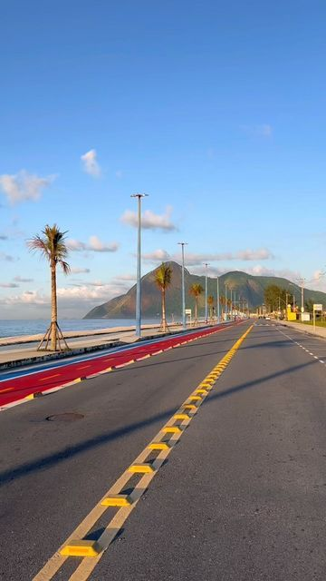

A metrópole do Rio de Janeiro é uma das cidades mais importantes do Brasil, com grande influência histórica, cultural e econômica. Conhecida por sua relevância global em turismo e eventos, como o Carnaval e os Jogos Olímpicos, a cidade também é um importante centro de setores como petróleo e serviços. Apesar de suas belezas naturais, como o Cristo Redentor e o Pão de Açúcar, o Rio enfrenta desafios como desigualdade social e segurança pública, típicos dos grandes centros urbanos.
1
Capital
22
Municípios
130+
Instituições
Alguns Municípios
Rio de Janeiro
municipio do rj
Cabo Frio
municipio do rj
Petropolis
municipio do rj
Galeria de Fotos
Metrópoles!
Rio de janeiro
São Gonçalo
Magaratiba
Duque de Caxias
ITAGUAÍ
NILÓPOLIS
NOVA IGUAÇU
Itaborai
PARACAMBI
PETRÓPOLIS
SAO JOAO DE MERITI
JAPERI
QUEIMADOS
BELFORD ROXO
GUAPIMIRIM
BOM JARDIM
NITERÓI

MARICÁ
MAGÉ
TERESÓPOLIS
SEROPÉDICA
TANGUÁ
Mapa dos Municípios Metropolitanos do Rio de Janeiro
Mapa das Instituições Superiores da Região Metropolitana do Rio de Janeiro